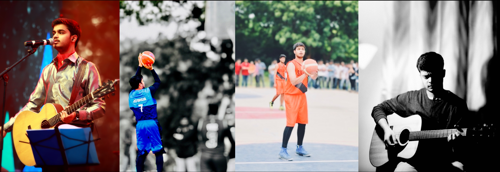
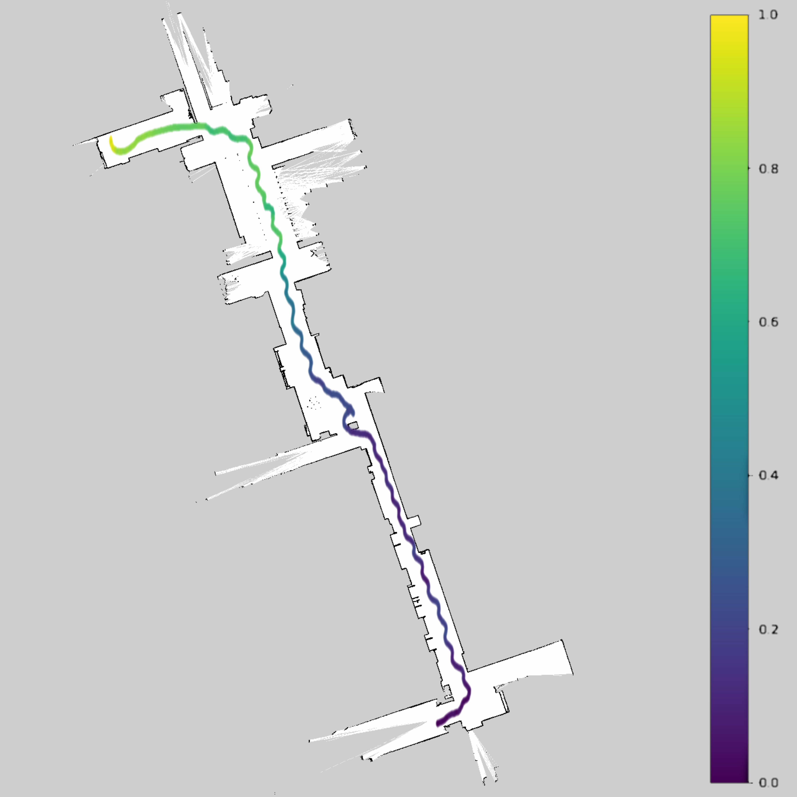
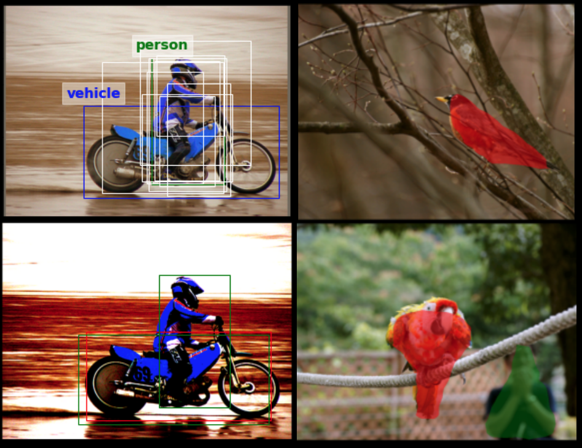

Robotics and autonomy software for real-world machines.

I am Joshua, a Robotics and Autonomy Software Engineer with an M.S. in Robotics from the University of Pennsylvania and 3+ years of experience across robotics, autonomy, controls, state estimation, and software engineering. My work spans robot behavior evaluation, telemetry pipelines, model predictive control, motion planning, EKF/UKF-based state estimation, sensor-driven autonomy workflows, and real-time systems that connect software to physical machines. I am focused on robotics roles, especially planning and controls for autonomous robots operating in complex real-world environments.
Outside engineering, I am also a musician, cinematographer, basketball player, and creative storyteller.
Experience
SLB
Embedded Software Engineer / Autonomy & Controls Software | Houston / Sugar Land, TX
- Built embedded and autonomy-adjacent software for real-world energy robotics and wireline systems.
- Developed telemetry workflows and software infrastructure for tractor behavior evaluation, replay analysis, and autonomy-readiness testing.
- Worked with multi-channel signals including motor current, RPM, tension, acceleration, winch speed, tractor velocity, depth, CCL, arm force, and system-status signals.
- Developed embedded firmware features involving MSP430, TI C2000/F2811, CAN, motor control, real-time task scheduling, interrupts, watchdogs, and bench/HIL-style validation.
- Worked across C++, C#, Python, Embedded C, Linux, Git, Docker, Kubernetes, RabbitMQ, and AsyncAPI.
XLAB for Autonomous Systems
Research Assistant, Penn Engineering | Philadelphia, PA
Worked on differentiable trajectory generation for car-like robots using interpolating radial basis function networks, cost evaluation, grid segmentation, and parametric optimal control concepts for autonomous vehicle trajectory generation.
Research paper
Maverick Medicare Systems
Team Lead | Hyderabad, India
Led development of a Smart Pill Expert System using APIs and web services for real-time diagnosis support and user-facing healthcare workflows. Helped develop prototypes, product direction, and go-to-market strategy.
Recognition included IKON Awards Best Innovator, TiEGrad Best Innovation, Bangkok IP Innovation and Technological Exposition gold, and design patents 322959-001 and 353987-001.
DRDO / Integrated Test Range
Research Intern | Visakhapatnam / Chandipur, India
Worked on radar signal processing and radar imaging projects, including wavelet-transform-based denoising for target detection and localization, and radar imaging for surveillance through concrete/marine environments.
Featured Projects
Predictive Traction / Wireline Tractor Autonomy
Developed autonomy evaluation workflows for wireline tractor mobility by transforming historical job archives and live multi-channel telemetry into behavior-labeled robotics datasets. The system supports slip, stall, micro-stall, traction degradation, bump, backoff, and re-engage analysis, enabling future supervisory control for speed, arm force, motor torque, and restriction-aware navigation.
F1TENTH Autonomous Racing


Built autonomous racing behaviors for an F1TENTH vehicle using LiDAR, RealSense depth camera, Jetson Xavier NX, motion planning, and reactive racing logic. Implemented overtaking and blocking behaviors using planning and state-estimation concepts. Placed second in head-to-head racing at ICRA 2022.
GitHub Video
MPC for 7-DOF Robot Arm Control

Implemented online model predictive control for collision-free control of a 7-DOF robotic manipulator in static and dynamic environments with obstacle constraints.
GitHub
Vehicle State Estimation and Friction Grids

Bridged the sim-to-real gap for an F1TENTH vehicle by estimating tire-road friction and vehicle state using a two-stage EKF/UKF filtering approach.
GitHub
Franka Emika Panda Pick-and-Place

Implemented a robust pick-and-place pipeline for a Franka Emika Panda arm using forward/inverse kinematics, obstacle avoidance, and path planning. Winning solution demonstrated at ICRA 2022.
GitHub Video
Instance Segmentation with Mask R-CNN

Extended Faster R-CNN for instance segmentation by implementing Mask R-CNN to detect and separate objects in images.
Faster R-CNN Mask R-CNN YOLO SOLO
Vision-Based Driver Assist for Dash Cams
Built a vision-based driver assistance pipeline using dash-camera video for lane-centering error calculation, lane departure warning, collision warning, obstacle detection, and top-down view generation.
Education
University of Pennsylvania
M.S. Robotics
Relevant coursework: Machine Learning, Computer Vision and Computational Photography, Introduction to Robotics, Learning in Robotics, Autonomous Racing, Controls and Optimization with Applications in Robotics, Advanced Machine Perception.
Sreenidhi Institute of Science and Technology
B.Tech Electronics and Communication Engineering
Relevant coursework: Signal Processing, Control Systems, Signals & Systems, Radar Systems, Analog & Digital Communication, Internet of Things.
Skills
Robotics & Autonomy
ROS/ROS2, motion planning, path planning, behavior planning, trajectory optimization, model predictive control, kinematics, collision checking, state estimation, EKF/UKF, multi-sensor fusion, SLAM concepts
Software & Systems
C++, Python, C#, Embedded C, Linux, Git, Docker, Kubernetes, RabbitMQ, AsyncAPI, CI/CD, unit testing, integration testing
Controls & Real-Time Systems
MSP430, TI C2000/F2811, CAN, motor control, real-time scheduling, interrupts, watchdogs, sensor/actuator integration, HIL testing, bench testing
Perception & Simulation
OpenCV, PyTorch, Gazebo, RViz, MATLAB, Simulink, LiDAR, RealSense, camera/depth sensing
Leadership & Creative Work
- Basketball captain / team leadership
- Music
- Cinematography
- Audio/video production
- Robotics event organization

{kind=link}
{kind=link}
{kind=link}